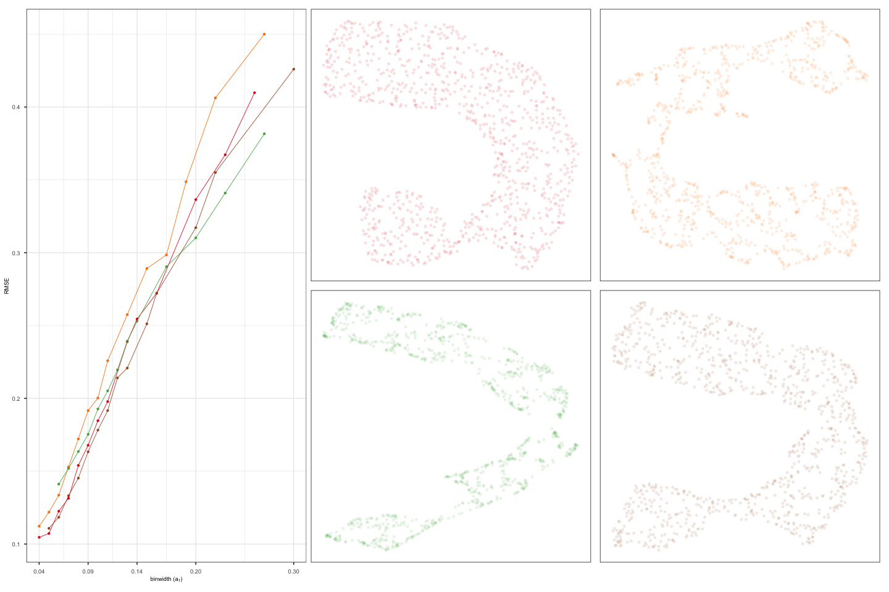

This illustrates how to compare multiple NLDR layouts and select the most appropriate one. The evaluation is typically based on Residual Mean Squared Error (RMSE), allowing you to assess the quality of different binning configurations or modeling strategies.
Step 1: Generate design for 2-D NLDR layouts
We begin by specifying a layout design for arranging the plots. The design defines the arrangement of 2-D NLDR layouts.
design <- gen_design(n_right = 4, ncol_right = 2)Step 2: Visualising RMSE across configurations
To visually compare multiple 2-D NLDR layouts, we use the
plot_rmse_layouts() function. This function plots RMSE
values against different bin width configurations along with 2-D NLDR
layouts, making it easier to identify the best-performing model
visually.
plot_rmse_layouts(plots = scurve_plts, design = design)